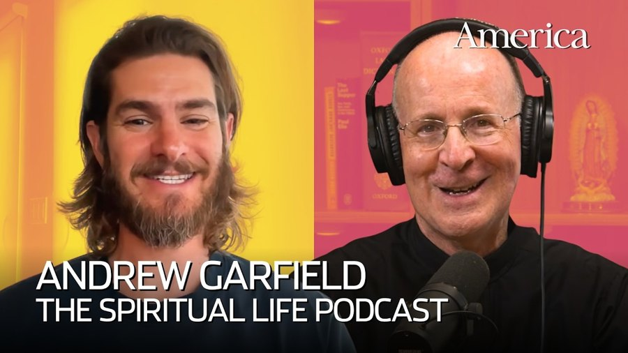
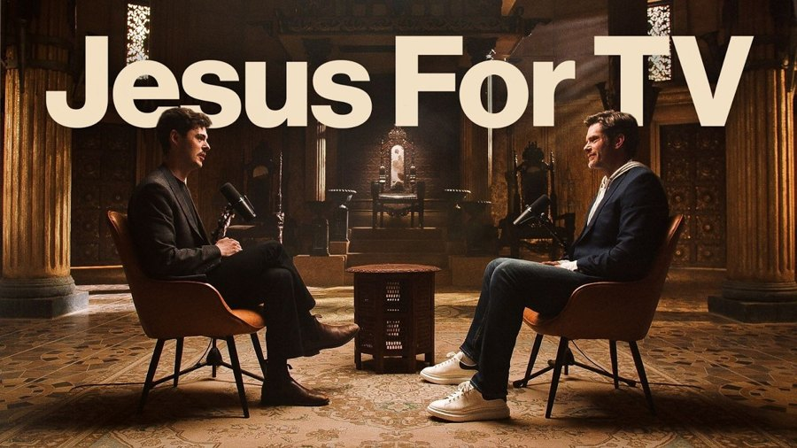
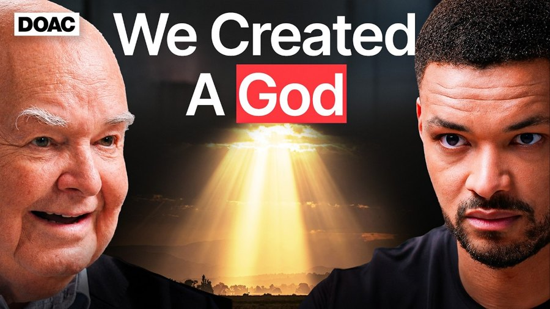

archive · 6
podcasts
episodes worth going back to.

How Jesuit spirituality changed Andrew Garfield's lifeThe Spiritual Life (America Media) · James Martin, S.J., with producer Maggie Van Dornadded 4 november 2026Brené Brown on Jesus and vulnerable spiritualityThe Spiritual Life (America Media) · James Martin, S.J., with producer Maggie Van Dornadded 4 november 2026Brené Brown: The Algorithms Have Forced Us Into A Hidden Epidemic, This Is The Only Way Out!The Diary Of A CEO · Steven Bartlettadded 4 november 2026
I Don't Care About the Reaction - The Chosen Creator Dallas JenkinsWithin Reason · Alex O'Connoradded 4 november 2026
No.1 Christianity Expert: If You DON'T Believe In a God You NEED to Hear This!The Diary of a CEO · Steven Bartlettadded 4 november 2026This Is Why I Find Pema Chödrön So EssentialThe Ezra Klein Show · Ezra Kleinadded 4 november 2026nothing matches.